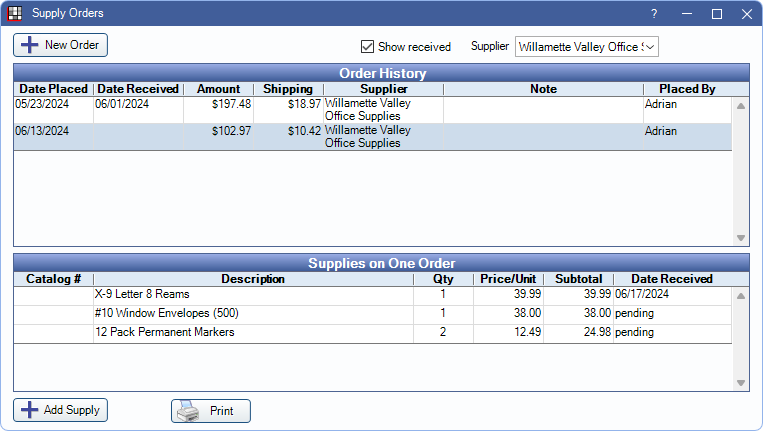

Supply Orders
The purpose of this feature is to track supply orders.
In the Supply Inventory window, click Orders.
New Order: Select a Supplier from the dropdown, then click New Order to create a new pending order.
Show received: Check to show received orders in the Order History grid.
Supplier: Use dropdown to filter the list by supplier, or to select the supplier for new orders.
Order History: The grid lists supply orders that have been created. Double-click an order to open the Supply Order window and make changes (see the Supply Order section for details). A pending order indicates there is no Date Placed entered.
Supplies on One Order: This grid lists all the supply items on the highlighted Supply Order. Click in the Qty or Price/Unit columns to edit this data. Double-click an item to open Supply Order Item to make edits to the item (see the Supply Order Item section for details).
Add Supply: Click to attach supplies to the selected order.
Print: Send the selected order to the default printer.
Supply Order
Double-click an order to open the Supply Order window. From here, track or update details of a specific order.

- Supplier: Read only. This field cannot be changed. When creating a new order, the supplier is assigned based on the selection in the Supplier dropdown.
- Date Placed: Defaults to today's date on new orders. Once a date is entered, the order is no longer considered pending.
- Placed By: For tracking purposes, a user can be selected from the dropdown. This defaults to the currently logged-on user when the order is created, but is only saved once a Date Placed is entered. Pending orders always default to None. This is not a security field and can be edited at any time after order has been sent.
- Date Received: Enter date the order was received. Click Today to enter current date. To mark individual items as received (e.g., the order was sent in multiple shipments), see Supply Order Item section.
-
If individual items on the order are not marked as received, there is a prompt to mark the remaining items as received.
- Click Yes to automatically enter a Date Received on remaining items.
- Click No to leave the Date Received on individual items blank. These items show pending in the Supplies on One Order list.
- Note: Enter any additional details about the order.
Supply Order Item
Double-click a supply item from the Supplies on One Order grid to make edits.

Most fields are read-only and populated based on information from the Supplies list. The following fields can be edited:
- Quantity: Number of supply items on the order.
- Price: The price per unit. The subtotal is calculated by Quantity x Price.
- Date Received: If the item was received separately from other parts of the order, enter the date received for this item only. Click Today to enter the current date in this field.
Add a New Order
- Click the Supplier dropdown and select a supplier.
- Click New Order. A new pending order is added to Order History list, and it should be highlighted.
- Click Add Supply and select the supply.
- Items manually added to an order have a default quantity of one and the price from the main Supplies list. Edit as required.
- Click Save.
- Repeat steps 3 and 4 as needed until all supplies are added to the order. As supplies are added, the items are listed in the Supplies on One Order grid.
- Once all items have been added, double-click on the pending order from Order History. Edit or add details as needed.
- The Total Amount automatically calculates based on price and quantity entered.
- Shipping charges can be entered separately.